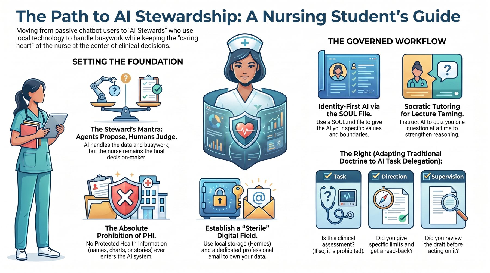
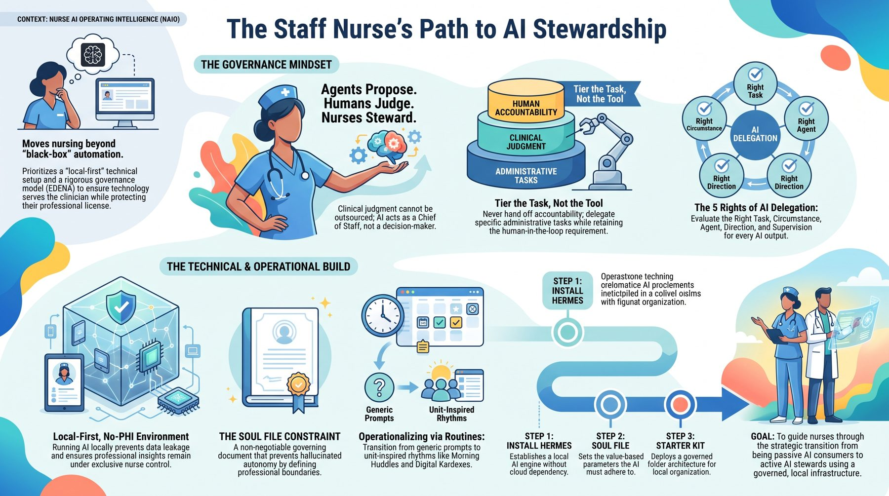
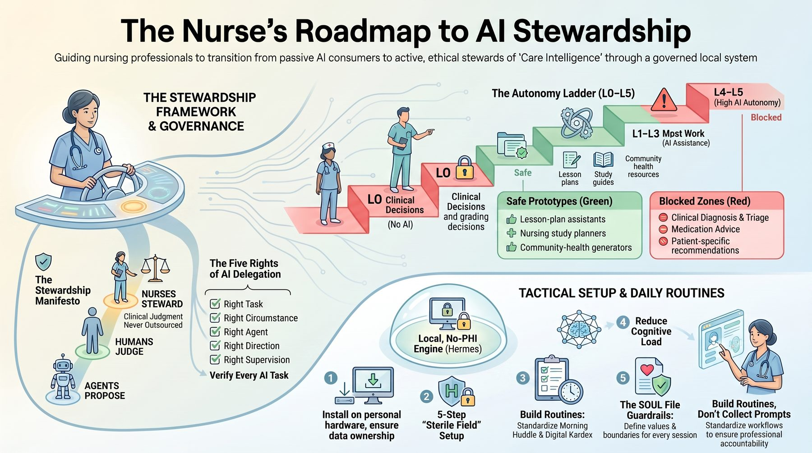

One lamp, many hands
Every pathway starts the same way — with the five-step setup — then grows in the direction your work is asking for. You can always change paths. The system grows with you.
Pathway 1 · Student Nurse
Lectures, readings, care plans, clinical prep, NCLEX-style questions — and the quiet fear that everyone else understands faster than you do.
A nurse who learns deeply and reasons for herself. AI explains, quizzes, organizes, and reflects with you — while your judgment stays awake. Tutor, never crutch.
Study maps from your own lectures · Socratic self-tests · NCLEX-style practice prompts · assignment planning · energy protection during clinicals.
Tutor, not crutch Think first You cannot break this

Pathway 2 · Staff / Bedside Nurse
The assignment, the messages, the policy changes, the education modules, the family updates — and the after-shift mental load that follows you home. The screen keeps asking for more while your presence feels thinner.
A nurse who reclaims time and presence. A safe system carries preparation, organization, reflection, and admin — never patient-specific care decisions, never your license.
Shift prep and recovery checklists · certification planning · meeting prep · policy summaries (public documents only) · reflection and professional growth · digital declutter.
No-PHI admin support More presence Judgment stays yours
Start with the five steps → Build it in the cohort →
Chasing your CCRN? The free CCRN AI Mentor Guide is live now — it personalizes to your weak points, and all you need is a ChatGPT account. More where that came from: 50+ free AI mentors →

Pathway 3 · Nurse Leader / Manager
You are being asked to respond to AI before the rules feel settled. Vendors arrive with demos; your team arrives with workload, privacy, equity, and safety concerns — and it all lands on your desk.
A leader with a defensible method — not a vendor demo. You ask better questions, set human gates, protect staff and students, and slow unsafe enthusiasm without becoming anti-innovation.
Map workflow burden · design human-approval gates · draft your vendor question list · prepare a no-PHI pilot conversation · build your team's AI readiness — all advisory, never claiming procurement or clinical-deployment authority.
Defensible governance Human gates Not a vendor demo
Start with the five steps → Request the leader path →
Setting up for a whole team, department, or organization? The full operating architecture — components, delegation doctrine, review gates, and a one-month starter build — lives at Domondon Dominium.
The full starter kit now includes 17-Leader-OS: six governed skills for the manager's desk — a weekly-brief drafter you approve before it ships, a QI coach, a staffing lens that works on anonymized aggregates only (and refuses person judgments), a policy drafter that cites its sources, a decision journal, and a governance facilitator that runs tier classification, the Five Rights pre-flight, and the rubber-stamp check. Plus your first governed workflow in one week — ending with a written unit AI accountability charter — and an incident-response one-pager sized for a unit. People decisions stay human, permanently.
Get the starter kit (includes Leader OS) → Browse the pack →

Pathway 4 · Nurse Educator
Your students already use AI — some wisely, some not. You need them to think with it, not cheat with it, and no one has handed you a curriculum for that.
An educator who designs AI-supported learning that strengthens judgment: mentorship, honest assignments, verifiable evidence of growth, and ethical AI literacy — without PHI or shortcuts.
AI mentoring patterns · assignment redesign for the AI era · community learning rhythms · evidence and badge frameworks · fictional-case teaching flows that never touch real clinical material.
Integrity first Evidence of growth Ethical AI literacy
After your foundation is solid
These lanes are invitations, not requirements. Finish your first 30 days before opening them — the order matters, and the boundary never changes.
The free deep track after your first 30 days: ten modules from first install to a governed, always-on system — memory, connectors, scheduled work, the operator console, EDENA governance — plus a 7-day fast track.
For nurses curious about one safe, no-PHI side project: an offer canvas, prompt pack, landing copy, and a 30-day validation sprint — the doorway to the Nurse Entrepreneur Program, launching September 15–17.
Build public-safe prototypes: workflow mapping, coding-agent supervision, and review gates before anything touches clinical care.
For advanced stewards and institutions: local-first systems, signed releases, and steward-council readiness. A separate module with institutional governance.
Two minutes of honest questions will tell you more than an hour of browsing.
Take the SOUL Quiz →